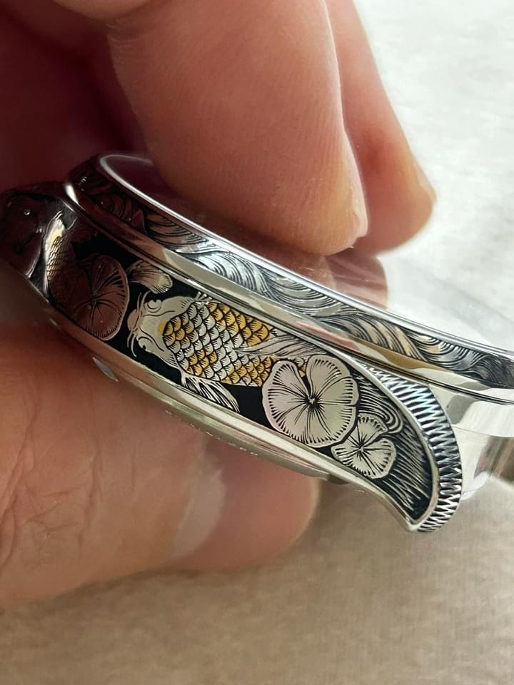
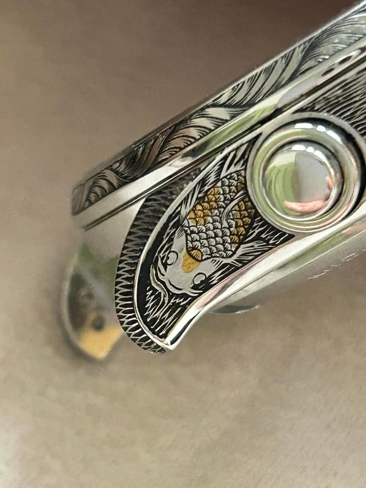
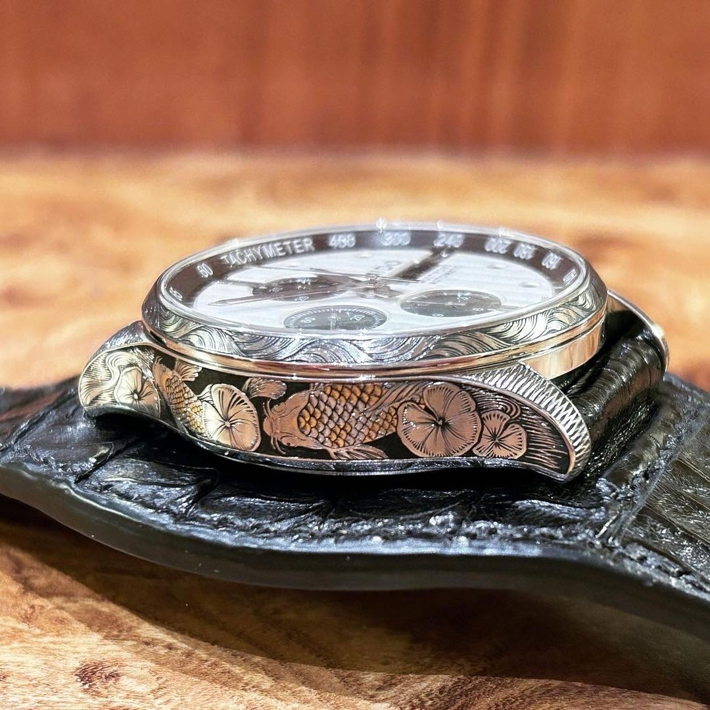
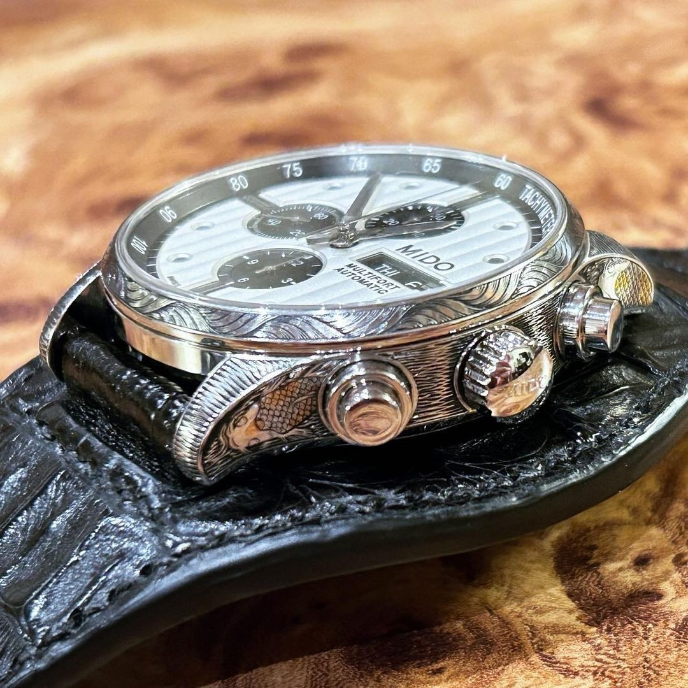
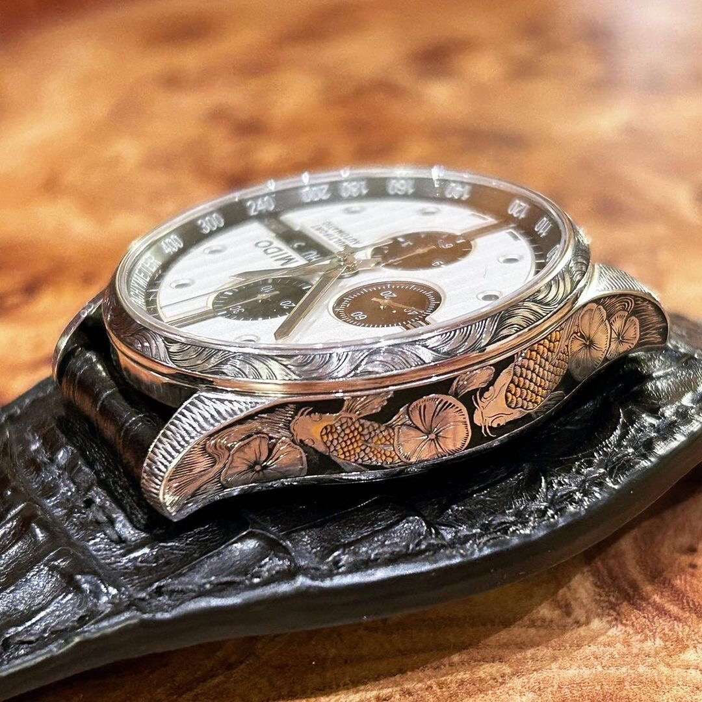

Selected work · 11
MIDO Koi

The project
A koi-inspired engraving that follows the watch’s contours.
The MIDO Koi project blends flowing aquatic motifs with precise surface work, extending the theme across the case and bracelet. Hand-cut textures and subtle contrast bring the engravings to life while preserving the watch’s elegant profile.





Details
- Watch
- MIDO Koi
- Technique
- Traditional hand engraving
- Composition
- Koi-inspired motifs across case and bracelet
- Studio
- Mr. Nine Engraving · Taiwan